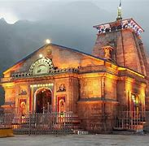

One of the most revered temple destinations of India, Kedarnath town is nestled in the mighty Garhwal Himalayas. The town, built around the revered Kedarnath temple, is located at an altitude of 3,580 m, near Chorabari glacier, which is the source of the Mandakini river. Dedicated to Lord Shiva, the ancient temple has exquisite architecture and is built of extremely large but evenly shaped grey stone slabs. A conical rock formation inside the temple is worshipped as Lord Shiva in his “Sadashiva” form. The Kedarnath temple, dedicated to Lord Shiva, is a part of Char Dham pilgrimage circuit, and is one of the 12 Jyotirlingas of Lord Shiva in India. Behind the Kedarnath temple, stand the Kedarnath peak, Kedar Dome and other Himalayan peaks.
The historical name of this region is "Kedar Khand" and legend says, the Pandavas from the epic Mahabharata, after having defeated the Kauravas, felt guilty of having killed so many people and sought the blessings of Lord Shiva for redemption. The Lord eluded them repeatedly and took refuge at Kedarnath in the form of a bull. The Lord dived into the ground, leaving his hump on the surface at Kedarnath. The remaining portions of Lord Shiva appeared at four other places and are worshipped there as his manifestations. The arms of the Lord appeared at Tungnath, the face at Rudranath, the belly at Madmaheshwar and his locks (hair) at Kalpeshwar.
